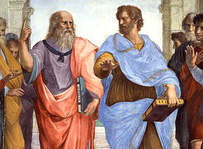
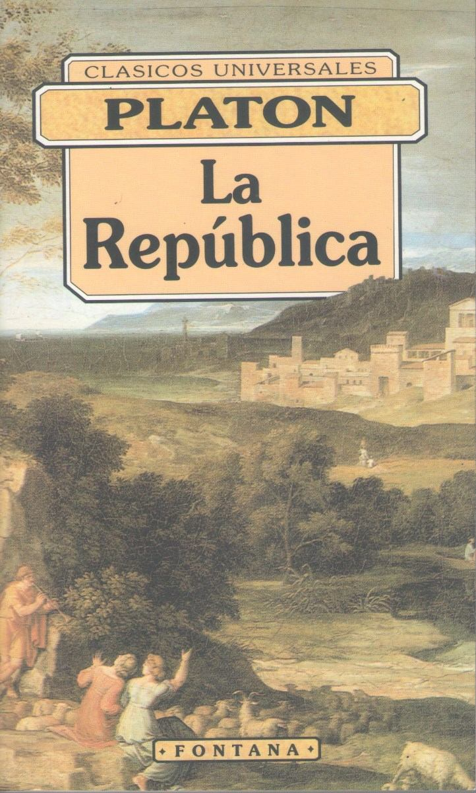
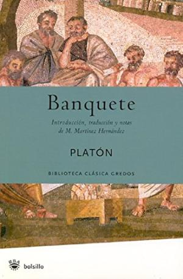
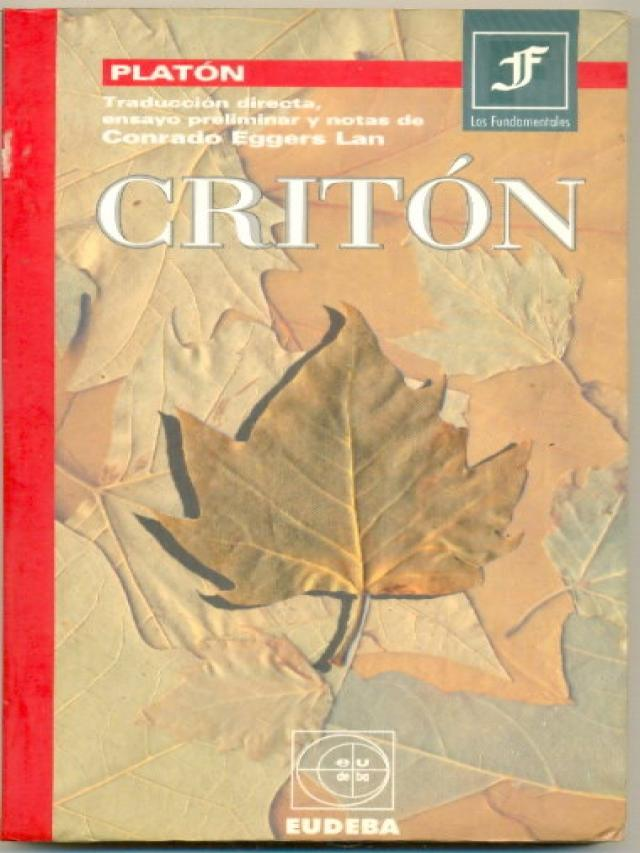

Platón nació probablemente en Atenas o en Egina en el año 427 a.C. y murió en Atenas el 347 a.C. Fue un filósofo aprendiz de Sócrates y maestro de Aristóteles. Es reconocido por sus diálogos, en los que habla de filosofía, metafísica, epistemología, ontología, ética, política, arte, y muchos otros temas.Platón era hijo de Aristón, y nació en medio de una familia aristocrática, en la que algunos miembros habían usurpado el poder de Atenas luego de la Guerra del Peloponeso. Es por ello que, pese a pertenecer a la oligarquía, Platón en varias ocasiones mostró su rechazo al gobierno que tenía Atenas en ese entonces. Esto puede evidenciarse en sus obras Político, Leyes y República.Sobre su infancia y adolescencia nos habla Espeusipo, su sobrino, quien describe la agilidad mental precoz de Platón. Cuenta además que en un comienzo el filósofo quería ser artista y que estaba muy interesado en la pintura, el drama y la poesía, y que incluso quería escribir tragedias; pero todo esto cambió cuando Platón comenzó a asistir a las reuniones impartidas por Sócrates. Y este interés por el arte rápidamente cambió por un odio hacia ellas, al punto de promover, en la construcción de su Estado Ideal, la expulsión de los poetas. Se sabe que, en cambio, Platón se dedicó a los deportes, al ejercicio corporal y sobre todo a las prácticas atléticas y a la gimnasia. De hecho, se ha llegado a saber que “Platón” no era su verdadero nombre, sino Aristocles, y que “Platón” era en realidad un apodo que le había puesto su profesor de gimnasia debido a su espalda ancha. Algunos creen incluso que era jorobado, y que luchó en la Guerra del Peloponeso y en la Guerra de Corinto.
Sabios y antiguos maestros

Por su parte, Aristóteles cuenta que antes de escuchar a Sócrates, Platón había conocido a Crátilo, quien lo había introducido en la antigua discusión de si el pensamiento es totalmente empírico o totalmente racional, inclinándolo por lo primero. Sin embargo, Sócrates le habría hecho cambiar de parecer al llevarlo a definir primero cada cosa de la que se quería hablar. Por ello llegó a la idea de que antes del mundo sensible, había una realidad que sólo podía ser conocida pero no experimentada, y de ahí surgió su teoría del mundo de las ideas, en donde existen los arquetipos de cada elemento del mundo empírico.
Su obra

respondiendo al tiempo en que las concibió. El primer momento responde a sus primeros diálogos, fuertemente determinados por el pensamiento socrático. En ellos podemos encontrar Apología, Ion, Critón, Protágoras, Laques, Lisis, Eutifrón, entre otros. El segundo momento es determinado por su posición política y por los primeros atisbos que hace de su teoría de las ideas. Aquí podemos encontrar obras como Gorgias, Eutidemo, Hipias Menor, Crátilo, Menexeno, y Menón, entre varias otras. El tercer momento es cuando ya está conformada la teoría de las ideas y el pensamiento según el cual conocer es recordar. Obras características de esta etapa son Fedro, Fedón, República y El Banquete. Finalmente, el cuarto momento es una evaluación que Platón hace sobre sus propias ideas, donde encontramos Teeteto, Parménides, Político, Filebo, Sofista, Leyes, Timeo, etc.